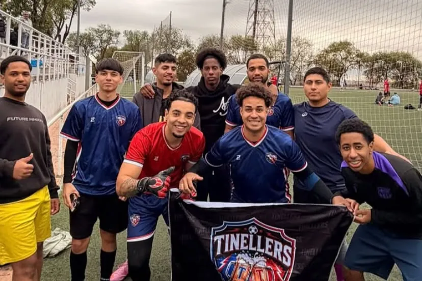
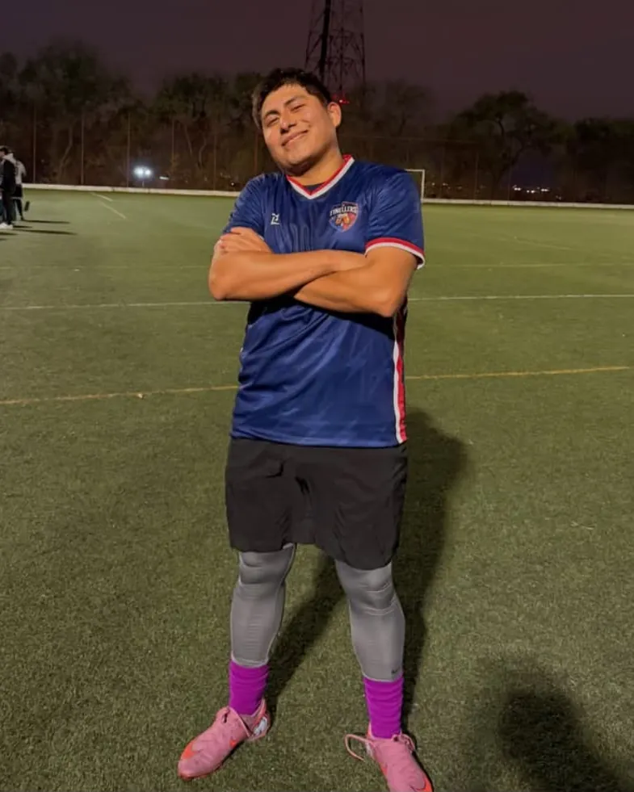
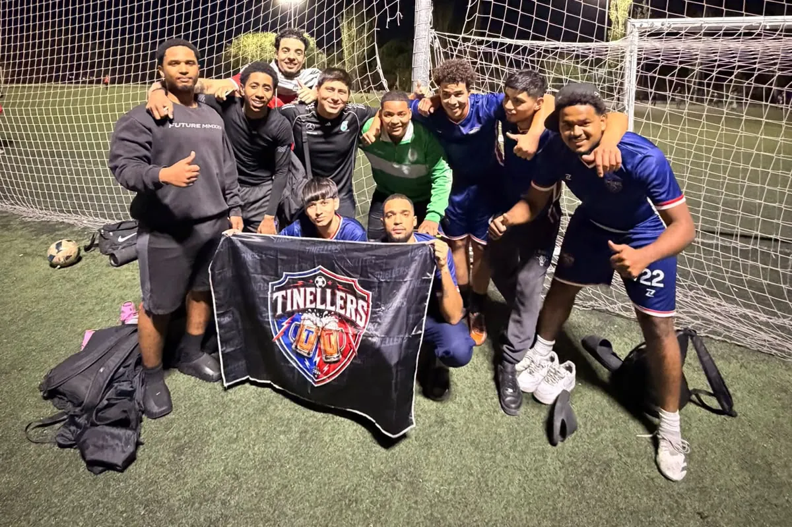
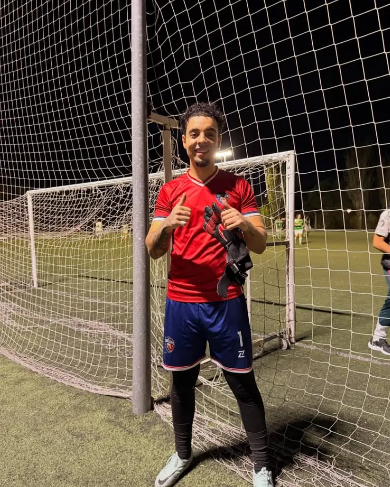

Franklin y los capitanes, al mando
El fundador Franklin Jiménez Santana lidera la dirección del club, respaldado por los capitanes Luis Núñez, Esteban Morales y Arian Burguillo.
Crónicas de cada jornada, los MVPs, comunicados del cuerpo técnico y anuncios del club.

El fundador Franklin Jiménez Santana lidera la dirección del club, respaldado por los capitanes Luis Núñez, Esteban Morales y Arian Burguillo.

 2–3
2–3
Debut soñado a domicilio. Goles de Alfa Umaro, Luis Núñez y Oscar Piero Malasquez.
Gran actuación de Oscar Piero, que se lleva el MVP del encuentro.

El primer MVP de la historia del club es para Oscar Piero Malasquez. Marcó uno de los tres goles del 2–3 ante Balkans FC y fue el jugador más determinante del debut.
Una semana después volvió a ver puerta en la goleada a La Banda del Patio. Lleva dos goles en dos partidos.
Cifras de la temporada tras la jornada 2.
Tras su ausencia sin aviso previo estando convocado, la dirección deportiva y el cuerpo técnico han decidido sancionar a Fidel Escalante (#25).
No disputó la jornada 2 y su regreso se producirá arrancando desde el banquillo en la jornada 3.

6–2
Exhibición coral del equipo. Goles de Alfa Umaro (2), Alejandro Cuevas (2), Oscar Piero (1) y Junior De Jesus (1).
Espectacular actuación bajo palos de Arian Burguillo, que se lleva un merecidísimo MVP.

El portero y capitán Arian Burguillo es el MVP de la jornada 2. Mientras el ataque firmaba seis goles, él cerró la portería con una actuación espectacular bajo palos.
Suma 12 paradas en dos partidos, la mejor cifra del equipo, y ya tiene su primer premio de la temporada.
Cifras de la temporada tras la jornada 2.
Quiniela de la jornada 3: elige jugador, categoría y predicción. Solo por diversión, sin dinero.